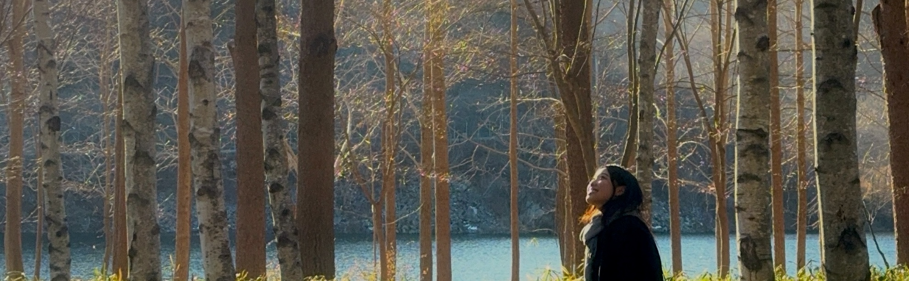

About Me
Hi, I am Yerin, a passionate designer from Korea! As a Designer, my vision is to create experiences that not only captivate but also connect with people on a deeper level. I see design as more than just aesthetics. It's about storytelling, problem-solving, and shaping how people interact with the world.
Yerin Choi
Hi, I am Yerin, a passionate designer from Korea! As a Designer, my vision is to create experiences that not only captivate but also connect with people on a deeper level. I see design as more than just aesthetics. It’s about storytelling, problem-solving, and shaping how people interact with the world.
Check out my portfolio for!
